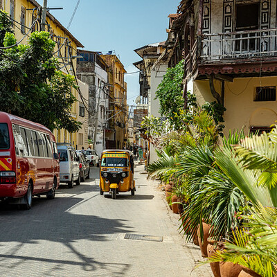
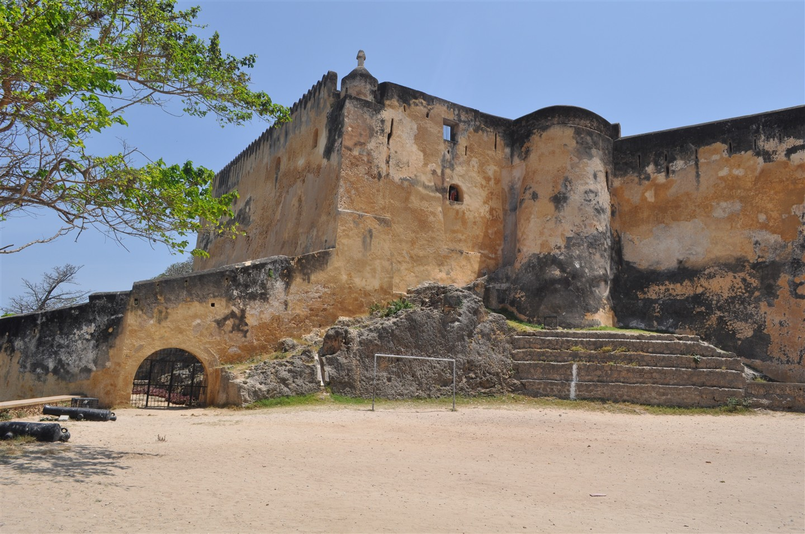

Kenyan coast · Heritage
Mombasa
Old Town lanes and time by the Indian Ocean.
Mombasa’s harbour and Old Town show how maritime trade shaped the Kenyan coast. Set aside time for the city’s streets and food before heading out to the water.

What to experience
Fort Jesus
Start at the fortress above the harbour. Its position at the entrance to the old port helps explain why control of Mombasa mattered to the seafaring powers that traded along this coast.
Old Town on foot
Take the lanes around the fort at walking pace. Look up at the balconies and carved doorways, then leave time for a Swahili lunch or a stop at a neighbourhood market.
From city to coast
Pair a morning around the harbour with an afternoon by the ocean. If you also have time for Kilifi, it offers a quieter stretch of coast and a different view of the region’s Swahili heritage.
Visitor information from National Museums of Kenya.
In photographs

